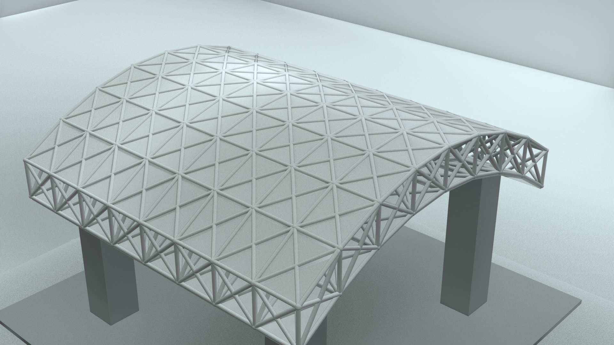
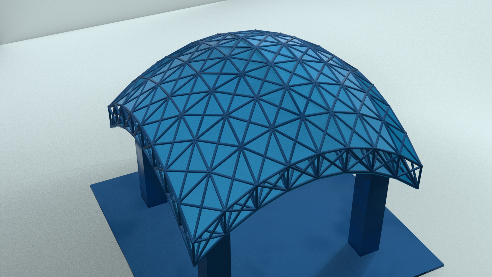
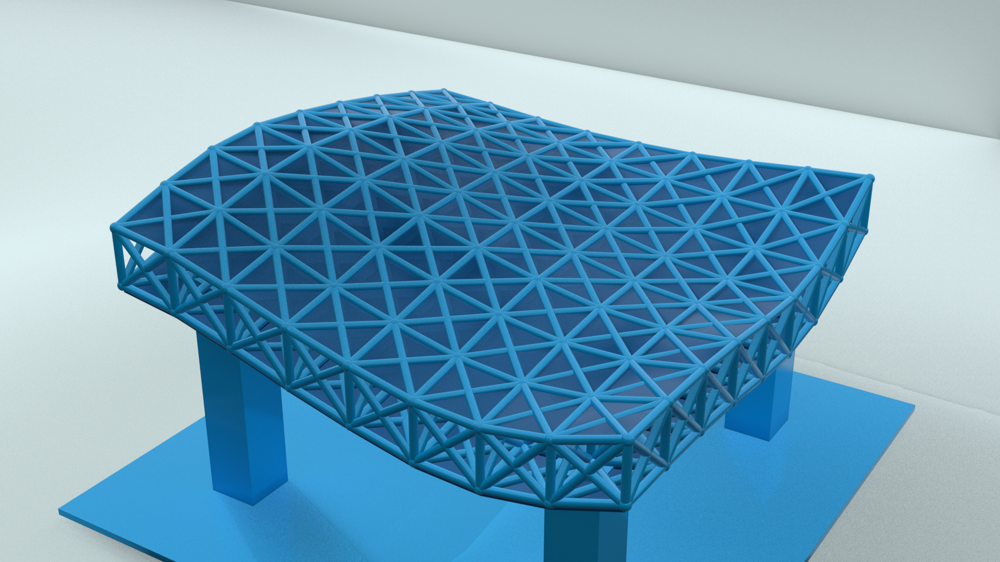
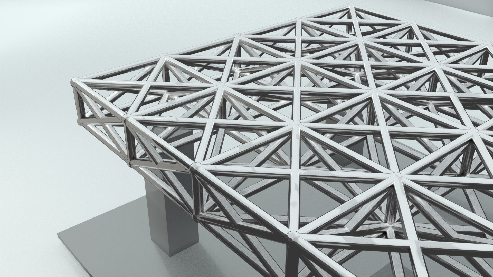
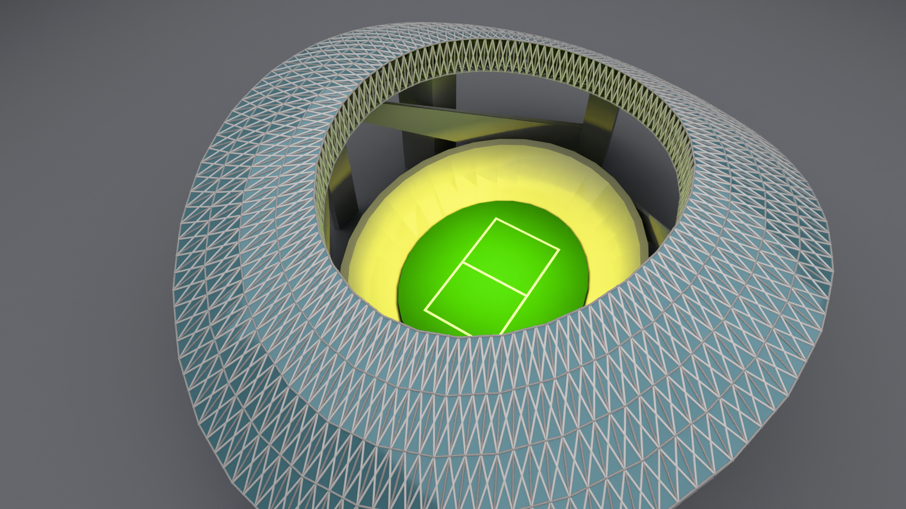
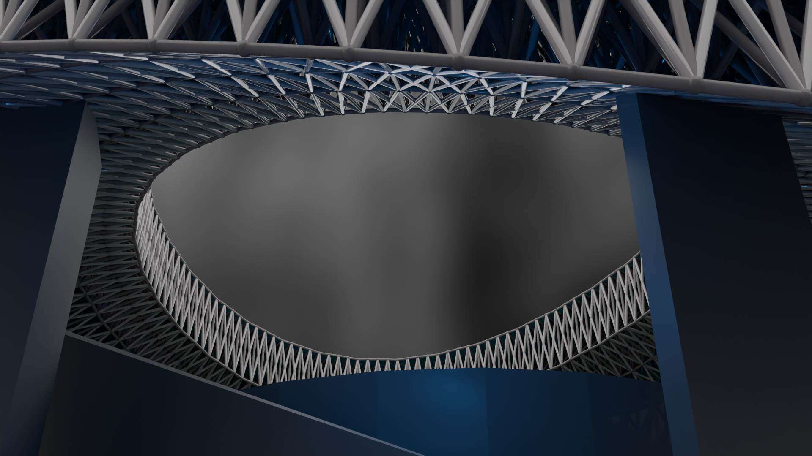
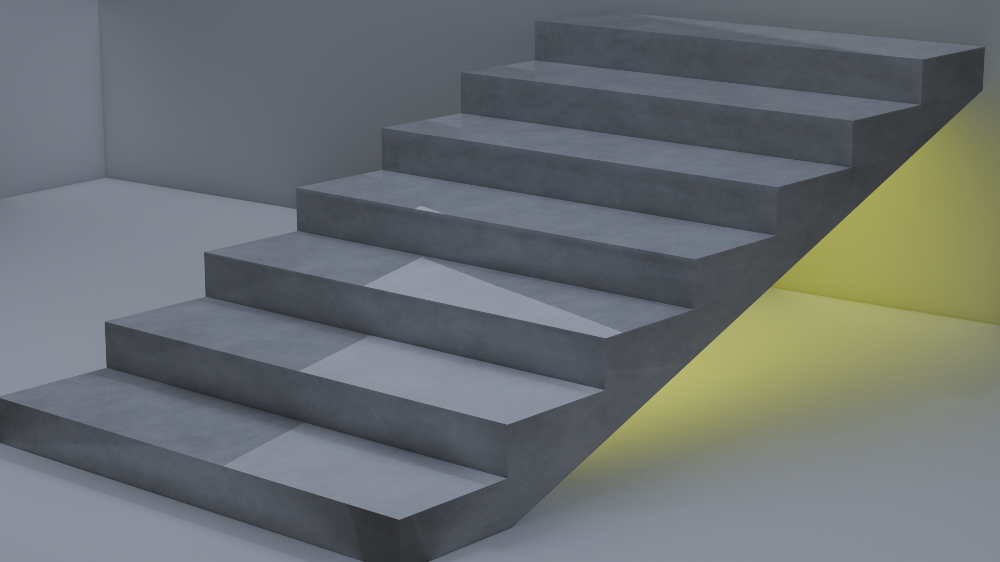

Plane to Truss Generator
An advanced structural modifier that instantly converts any input mesh plane into a fully parameterized 3D structural space truss, even if the base face is non-rectangular. It offers absolute control over geometric subdivision, scaling, and profile manipulation while remaining completely non-destructive.
Technical Capabilities
- Arbitrary Mesh Topologies: Natively handles non-rectangular, organic, or skewed face layouts without breaking structural alignment.
- Parametric Profiles: Dynamically deform profiles across dual orthogonal axes, allowing for clean edge boundaries while implementing custom curves, noise distributions, or mathematical sine waves.
- Modular Structural Cladding: Built-in toggle to selectively include or strip top and bottom roof panelings/claddings.
- Material ID Separation: Independent material slots assigned directly within the modifier stack for framework and cladding components.
Workflow Demonstration
Structural Variations






Dynamic Stair Generator
A highly optimized, production-focused utility designed to generate clean, single-lift straight stairs equipped with structural waist slabs. By excluding heavy and restrictive rail sub-trees, this tool focuses entirely on maximizing layout versatility and spatial adaptability according to the user's explicit design intent.
Technical Capabilities
- 3D Spatial Target Handles: Driven via active start and end control objects. Moving these targets instantly redistributes steps dynamically across any orientation in 3D space.
- Automatic Rotational Vectoring: Steps automatically compute orientation coordinates based on the directional vector between targets, ensuring perfect alignment at any angle or pitch.
- Granular Dimension Controls: Independent parameters to scale the lift width, adjust individual riser/tread distributions, or manually alter overall step density.
- Dedicated Structural Shading: Separate material assignments exposed in the UI for the individual step elements and the primary structural concrete waist slab.
Workflow Demonstration
Production Render
